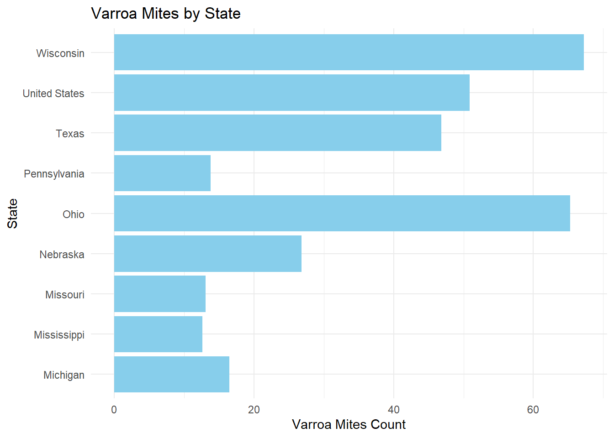
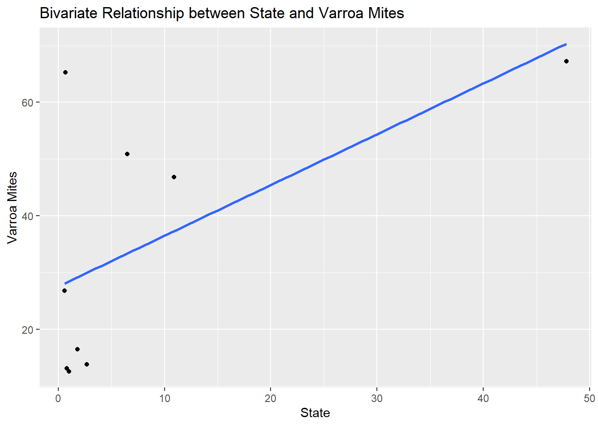

library(readxl)
library(tidyverse)
library(dplyr)
library(readr)
library(tidymodels)loading/cleaning/wrangling/exploring
# Output cleaned data file to a csv file.
hcny_data <- read.csv("C:/Users/ecruz/OneDrive/Documents/UTSA - Data Science Program/Semester Classes/Practicum II Repository/P2-Practicum-II-Portfolio-EdwardCruz/hcny_CleanDraft.csv", header = FALSE, stringsAsFactors = FALSE)head(hcny_data) V1 V2 V3 V4 V5 V6 V7
1 state varroa_mites other_pests disease pesticides other unknown
2 Kansas 35.5 2 0.1 21.7 3.4 2
3 Kentucky 8 2.9 1 1.3 0.5 5.6
4 <NA> <NA> <NA> <NA> <NA> <NA> <NA>
5 <NA> <NA> <NA> <NA> <NA> <NA> <NA>
6 <NA> <NA> <NA> <NA> <NA> <NA> <NA>str(hcny_data)'data.frame': 41 obs. of 7 variables:
$ V1: chr "state" "Kansas" "Kentucky" NA ...
$ V2: chr "varroa_mites" "35.5" "8" NA ...
$ V3: chr "other_pests" "2" "2.9" NA ...
$ V4: chr "disease" "0.1" "1" NA ...
$ V5: chr "pesticides" "21.7" "1.3" NA ...
$ V6: chr "other" "3.4" "0.5" NA ...
$ V7: chr "unknown" "2" "5.6" NA ...summary(hcny_data) V1 V2 V3 V4
Length:41 Length:41 Length:41 Length:41
Class :character Class :character Class :character Class :character
Mode :character Mode :character Mode :character Mode :character
V5 V6 V7
Length:41 Length:41 Length:41
Class :character Class :character Class :character
Mode :character Mode :character Mode :character # Step 2: Merge the first two rows to create a new header
new_header <- paste(hcny_data[1, ], hcny_data[2, ], sep = " ")
# Step 3: Set the new header
colnames(hcny_data) <- new_header
# Step 4: Remove the first three rows
hcny_data <- hcny_data[-c(1:3), ]
# Step 5: Remove completely blank rows
hcny_data <- hcny_data[rowSums(hcny_data != "") > 0, ]
# Display the resulting data frame
head(hcny_data) state Kansas varroa_mites 35.5 other_pests 2 disease 0.1 pesticides 21.7
NA <NA> <NA> <NA> <NA> <NA>
NA.1 <NA> <NA> <NA> <NA> <NA>
NA.2 <NA> <NA> <NA> <NA> <NA>
NA.3 <NA> <NA> <NA> <NA> <NA>
8 Michigan 16.5 1.7 1.8 2.1
NA.4 <NA> <NA> <NA> <NA> <NA>
other 3.4 unknown 2
NA <NA> <NA>
NA.1 <NA> <NA>
NA.2 <NA> <NA>
NA.3 <NA> <NA>
8 3.3 10.3
NA.4 <NA> <NA># Assuming hcny_data is your cleaned data frame
colnames(hcny_data) <- c("state", "varroa_mites", "other_pests", "disease", "pesticides", "other", "unknown")head(hcny_data) state varroa_mites other_pests disease pesticides other unknown
NA <NA> <NA> <NA> <NA> <NA> <NA> <NA>
NA.1 <NA> <NA> <NA> <NA> <NA> <NA> <NA>
NA.2 <NA> <NA> <NA> <NA> <NA> <NA> <NA>
NA.3 <NA> <NA> <NA> <NA> <NA> <NA> <NA>
8 Michigan 16.5 1.7 1.8 2.1 3.3 10.3
NA.4 <NA> <NA> <NA> <NA> <NA> <NA> <NA># Convert specified columns to numeric with warning suppression
hcnydata_cleaned <- hcny_data %>%
mutate(across(c("varroa_mites", "other_pests", "disease", "pesticides", "other", "unknown"), ~suppressWarnings(as.numeric(.))))
# Display the resulting data frame
head(hcnydata_cleaned) state varroa_mites other_pests disease pesticides other unknown
NA <NA> NA NA NA NA NA NA
NA.1 <NA> NA NA NA NA NA NA
NA.2 <NA> NA NA NA NA NA NA
NA.3 <NA> NA NA NA NA NA NA
8 Michigan 16.5 1.7 1.8 2.1 3.3 10.3
NA.4 <NA> NA NA NA NA NA NAhead(hcnydata_cleaned) state varroa_mites other_pests disease pesticides other unknown
NA <NA> NA NA NA NA NA NA
NA.1 <NA> NA NA NA NA NA NA
NA.2 <NA> NA NA NA NA NA NA
NA.3 <NA> NA NA NA NA NA NA
8 Michigan 16.5 1.7 1.8 2.1 3.3 10.3
NA.4 <NA> NA NA NA NA NA NA# Verify the changes
str(hcnydata_cleaned)'data.frame': 38 obs. of 7 variables:
$ state : chr NA NA NA NA ...
$ varroa_mites: num NA NA NA NA 16.5 NA 12.6 13.1 NA 26.8 ...
$ other_pests : num NA NA NA NA 1.7 NA 3.5 6.4 NA 3.9 ...
$ disease : num NA NA NA NA 1.8 NA 1 0.8 NA 0.6 ...
$ pesticides : num NA NA NA NA 2.1 NA 3.2 0.5 NA 0.5 ...
$ other : num NA NA NA NA 3.3 NA 9.1 4.8 NA 0.6 ...
$ unknown : num NA NA NA NA 10.3 NA 2.4 3.4 NA 3.7 ...head(hcnydata_cleaned) state varroa_mites other_pests disease pesticides other unknown
NA <NA> NA NA NA NA NA NA
NA.1 <NA> NA NA NA NA NA NA
NA.2 <NA> NA NA NA NA NA NA
NA.3 <NA> NA NA NA NA NA NA
8 Michigan 16.5 1.7 1.8 2.1 3.3 10.3
NA.4 <NA> NA NA NA NA NA NAggplot(hcnydata_cleaned, aes(varroa_mites)) + geom_histogram()
view((hcnydata_cleaned))# Write the cleaned data to a new CSV file
write.csv(hcnydata_cleaned, "C:/Users/ecruz/OneDrive/Documents/UTSA - Data Science Program/Semester Classes/Practicum II Repository/P2-Practicum-II-Portfolio-EdwardCruz/hcny_CleanDraft.csv", row.names = FALSE)********************Conclusion- all code below is test code right now********************************
# Assuming hcnydata_cleaned is your data frame
hcnydata_cleaned <- hcnydata_cleaned[apply(hcnydata_cleaned, 1, function(x) !all(is.na(x))), ]
# Print the modified data frame to verify the changes
head(hcnydata_cleaned) state varroa_mites other_pests disease pesticides other unknown
8 Michigan 16.5 1.7 1.8 2.1 3.3 10.3
10 Mississippi 12.6 3.5 1.0 3.2 9.1 2.4
11 Missouri 13.1 6.4 0.8 0.5 4.8 3.4
13 Nebraska 26.8 3.9 0.6 0.5 0.6 3.7
19 Ohio 65.3 33.5 0.7 5.7 1.0 4.4
22 Pennsylvania 13.8 7.2 2.7 6.9 1.1 1.1view(hcnydata_cleaned)str(hcnydata_cleaned)'data.frame': 9 obs. of 7 variables:
$ state : chr "Michigan" "Mississippi" "Missouri" "Nebraska" ...
$ varroa_mites: num 16.5 12.6 13.1 26.8 65.3 13.8 46.8 67.2 50.9
$ other_pests : num 1.7 3.5 6.4 3.9 33.5 7.2 42.3 9.8 13.9
$ disease : num 1.8 1 0.8 0.6 0.7 2.7 10.9 47.8 6.5
$ pesticides : num 2.1 3.2 0.5 0.5 5.7 6.9 12.1 49.2 10.5
$ other : num 3.3 9.1 4.8 0.6 1 1.1 30.1 48.1 13.6
$ unknown : num 10.3 2.4 3.4 3.7 4.4 1.1 10.2 46.8 6#update.packages('mgcv')
library(mgcv)Warning: package 'mgcv' was built under R version 4.3.3Warning: package 'nlme' was built under R version 4.3.3# Convert the 'state' column to a factor
hcnydata_cleaned$state <- as.factor(hcnydata_cleaned$state)
# Display the resulting data frame
head(hcnydata_cleaned) state varroa_mites other_pests disease pesticides other unknown
8 Michigan 16.5 1.7 1.8 2.1 3.3 10.3
10 Mississippi 12.6 3.5 1.0 3.2 9.1 2.4
11 Missouri 13.1 6.4 0.8 0.5 4.8 3.4
13 Nebraska 26.8 3.9 0.6 0.5 0.6 3.7
19 Ohio 65.3 33.5 0.7 5.7 1.0 4.4
22 Pennsylvania 13.8 7.2 2.7 6.9 1.1 1.1# Step 3: Reindex the rows starting from 1
rownames(hcnydata_cleaned) <- NULL# Identify the rows to exclude
rows_to_exclude <- c(46)
# Remove rows 45 to 52 while excluding row 46
data_hcny <- hcnydata_cleaned[-c(45:52)[-which(c(45:52) %in% rows_to_exclude)], ]library(ggplot2)
# Create a bar graph to show state and varroa_mites
ggplot(data = data_hcny, aes(x = state, y = varroa_mites)) +
geom_bar(stat = "identity", fill = "skyblue") +
labs(title = "Varroa Mites by State",
x = "State",
y = "Varroa Mites Count") +
theme_minimal() +
coord_flip()
Remove all rows with any NA values
library(tidyr)
my_data <- data_hcny %>% drop_na()
# Verify that NAs have been removed
glimpse(my_data)Rows: 9
Columns: 7
$ state <fct> Michigan, Mississippi, Missouri, Nebraska, Ohio, Pennsylv…
$ varroa_mites <dbl> 16.5, 12.6, 13.1, 26.8, 65.3, 13.8, 46.8, 67.2, 50.9
$ other_pests <dbl> 1.7, 3.5, 6.4, 3.9, 33.5, 7.2, 42.3, 9.8, 13.9
$ disease <dbl> 1.8, 1.0, 0.8, 0.6, 0.7, 2.7, 10.9, 47.8, 6.5
$ pesticides <dbl> 2.1, 3.2, 0.5, 0.5, 5.7, 6.9, 12.1, 49.2, 10.5
$ other <dbl> 3.3, 9.1, 4.8, 0.6, 1.0, 1.1, 30.1, 48.1, 13.6
$ unknown <dbl> 10.3, 2.4, 3.4, 3.7, 4.4, 1.1, 10.2, 46.8, 6.0Bivariate Analysis
## Example of a bivariate plot between 'state' and 'varroa_mites'
ggplot(my_data, aes(x = disease, y = varroa_mites)) +
geom_point() +
geom_smooth(method = "lm", se = FALSE) +
labs(title = "Bivariate Relationship between State and Varroa Mites",
x = "State",
y = "Varroa Mites")
Multivariable GLM
#install.packages("tidymodels")
library(tidymodels)
library(broom)
# Specify the GLM model
glm_spec <- linear_reg() %>%
set_engine("glm")
# Create a recipe for preprocessing the data
glm_recipe <- recipe(varroa_mites ~ other_pests + disease + pesticides + other + unknown, data = my_data) %>%
step_normalize(all_predictors())
# Create a workflow
glm_workflow <- workflow() %>%
add_model(glm_spec) %>%
add_recipe(glm_recipe)
# Fit the model
glm_fit <- fit(glm_workflow, data = my_data)
# Print the model summary using tidy()
model_summary <- tidy(glm_fit)
print(model_summary)# A tibble: 6 × 5
term estimate std.error statistic p.value
<chr> <dbl> <dbl> <dbl> <dbl>
1 (Intercept) 34.8 5.02 6.92 0.00618
2 other_pests 14.6 8.25 1.76 0.176
3 disease -52.1 97.6 -0.533 0.631
4 pesticides 51.0 60.7 0.840 0.463
5 other -8.94 21.6 -0.414 0.707
6 unknown 23.1 34.0 0.681 0.544